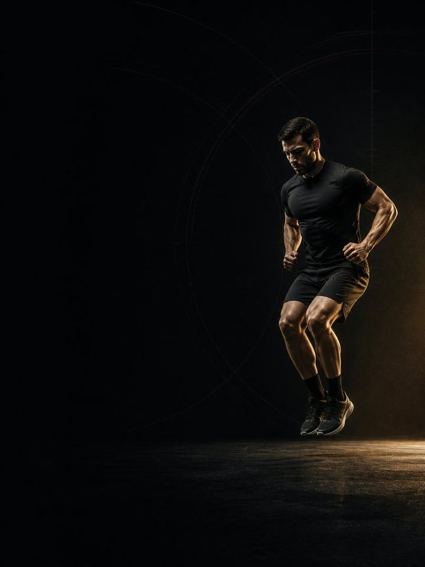

Endurance · Build
Strength gives you force. Stiffness gives it back for free.
- Built forrunners, cyclists and triathletes
- Training days2 gym days a week, around your training
- Session length41–43 minutes
- Equipmentfull gym with a barbell, machines and a step
- Formatmobile PDF, every exercise linked to a demo video
- Get all four blocks of this sport family for 119.990 KD (159.960 KD if bought separately).
- Upgrade to 1:1 coaching within 30 days and this price comes off your first month.
The store opens soon. For now, Buy opens an Instagram message and you receive the PDF there.
Who it's for
Runners, cyclists and triathletes who have finished a base block and are heading into the heavy training phase before their race season.
The Base block taught the tissue to tolerate load. This block is where you get strong. It holds the heaviest lifting of your year, and it happens now because racing is still far away. It also adds one new ingredient: low-amplitude plyometrics, meaning pogo hops, ankle stiffness work and short ground contacts. It looks trivial, costs almost nothing to recover from, and is one of the most reliable ways to improve running economy. Strength gives you force. Stiffness gives that force back on every ground contact. Still two sessions a week, still shorter than you expect, and still built around the training that actually matters.
Where it sits in the year: Block 2 of 4. Base, Build, Compete, Restore. Run it in the heavy training phase before your race season, when you are fit but not yet sharpening.
Your week
Still two gym days, not three. The lifting gets heavier, not longer.
| Sun | Mon | Tue | Wed | Thu | Fri | Sat |
|---|---|---|---|---|---|---|
| Day 1 | Session | Day 2 | Session | Session | Rest | Long session |
Heavy training week: move Day 2 later, so it reads Day 1, session, session, rest, Day 2, rest, long session.
Every session runs the same way:
- Warm-up, 8–10 min. The same sequence each time, plus a few pogo hops to wake the ankles up.
- Plyometrics, 5 min. Short, springy and fresh. Before the heavy work, never after it.
- Main lifts, 20 min. Two or three heavy lifts with long rests. The centre of the block.
- Tendon work, 8 min. Calf raises, Nordics and tibialis work. Last, and never cut.
Plyometrics move to the front in this block because stiffness work only works when you are fresh. Tired hops are just hops. Short on time? Cut a set from the main lifts, not the calf work.
How the 12 weeks progress
Two things in the gym improve endurance performance, and they are not the same. Maximal strength lowers the share of your capacity each stride or pedal stroke demands. Tendon stiffness is separate: a stiffer Achilles returns more of the energy you put into the ground, so the same pace costs less oxygen. Stiffness responds to short, fast, low-amplitude loading, hops with almost no knee bend, not to heavy slow lifting. That is why this block runs both. The plyometric dose stays deliberately small, because the adaptation comes from the quality of each contact, not the number of jumps.
Three phases of four weeks each. Load peaks in the middle of the block, then bar speed and elastic quality take over. Gym volume falls across the block on purpose, because your running or riding volume is rising at the same time.
| Weeks 1–4 | Weeks 5–8 | Weeks 9–12 | |
|---|---|---|---|
| Phase | Maximal strength | Tendon stiffness | Reactive strength |
| Goal | Build maximal strength with heavy, low-rep lifting | Increase calf and Achilles tendon stiffness | Turn strength and stiffness into reactive strength and economy |
| Looks like | The heaviest lifting of the year, sets of 4–5. Plyometrics start at a tiny dose | Load stays high while the hopping builds. Contacts get shorter and sharper | The shortest sessions of the year. Heavy, fast, out |
| Working sets per week | 39 | 39 | 31 |
| Average effort | RPE 7.9, about 2 reps in reserve | RPE 7.8, about 2 reps in reserve | RPE 7.9, about 2 reps in reserve |
| Landings per week | 95 | 141 | 141 |
The block at a glance
Working sets per week, by what they train. The dashed line is effort.
Where this block sits in the training year
Run the four blocks in order and they make a full training year.
RPE is effort rated out of 10. Reps in reserve is how many more good reps you could have done, so "about 2 reps in reserve" means about 2 reps left in the tank.
Deload weeks: weeks 6 and 12 halve the sets and drop the plyometrics, and you retest fresh. Take a deload early if a training block spikes.
The rules that make it work
- This is the heaviest block of your year. Sets of three to five reps, long rests, real load. Racing is far away, and there is no better window to get strong.
- Plyometrics come first, or not at all. Stiffness adapts to fast, fresh, quality contacts. Hops done tired at the end of a session are just fatigue with extra impact.
- Small doses of hopping, done well. Ten to fifteen seconds at a time. Quiet landings, stiff ankles, almost no knee bend. A loud landing means you are collapsing, and the set is over.
- Volume goes down as load goes up. Your training volume climbs through this block, so the gym shrinks to make room.
- It will not make you bulky. Heavy, low-rep training builds force and tendon stiffness with very little size. If body weight climbs, that is nutrition, not the barbell.
- Count your landings, not just your sets. Every jump, hop, bound and drop is a landing your tendons pay for, warm-up hops included. Keep the week under about 150 landings in this block, with your own training counted on top.
- Drop a hop set in heavy weeks. If the week already carries hard track or hill sessions, take one set off every hop exercise. The landing count is a ceiling, not a target.
Terms
- Block: 12 weeks. This program. One block develops one set of qualities to a set standard.
- Phase (mesocycle): 4 weeks. Each one targets one quality. Four weeks is a choice, not a rule. The length follows the goal.
- Training week (microcycle): where effort climbs, sets are added and the deload lands.
- Training year (macrocycle): four blocks in order (Base, Build, Compete, Restore), about 48 weeks.
How you'll measure progress
Weeks 6 and 12 are retest weeks, done fresh at the end of each deload. Every week also starts with a 90-second check: three standing broad jumps at the start of Day 1, keeping the best. More than 10 per cent below your own rolling average means that day is reduced. The power work comes out and each lift loses one set, whatever the page says.
What good progress looks like
- Weeks 1–4: the bar gets heavy and the calves get sore from the hopping. Both settle.
- Weeks 5–8: strength numbers climb fastest here, and this is usually when pace starts to feel cheaper at the same effort.
- Weeks 9–12: the sessions are the shortest of the year and the loads the highest.
Body weight should stay roughly stable throughout. The block builds force and stiffness, not mass.
Respect the week
Count everything: races, training sessions, gym and sleep. Sudden jumps in weekly workload are the most reliable predictor of injury in amateur sport. In a heavy training week, drop a gym session or cut the power work, but never cut both the training and the recovery. Protect 7–9 hours of sleep. It is the most powerful performance tool available, and the cheapest.
The science
Every program in the library is built on published research, and how strong that research is gets stated, not implied. Where the evidence is limited, the page says so.
| Finding | Source | What it does not show |
|---|---|---|
| Strength training cuts sports injuries to under a third of the control rate. Stretching does not reduce them. | Lauersen, Bertelsen & Andersen, Br J Sports Med 2014. Meta-analysis of 25 RCTs, 26,610 participants. PMID 24100287 | Risk ratio 0.32 for strength training and 0.96 for stretching. The trials varied a lot, and dose was not standardised. |
| Programs that include the Nordic hamstring exercise roughly halve hamstring injuries. | van Dyk, Behan & Whiteley, Br J Sports Med 2019. Meta-analysis, 15 studies, 8,459 athletes. PMID 30808663 | Risk ratio 0.49. The effect shrinks but survives when the eight high-risk-of-bias studies are removed (0.55). It measures programs that include the exercise, not the exercise alone. |
| Every sensible prescription beats not training. Heavier loads rank highest for strength. Multiple sets rank highest for muscle size. | Currier et al., Br J Sports Med 2023. Network meta-analysis, 178 strength and 119 hypertrophy studies. PMID 37414459 | The differences between prescriptions were small, and all of them worked. |
What's next
After 12 weeks:
- Next block: Endurance · Compete
- One area needs work: the Corrective series
Want it built around you? One-to-one coaching through the Trainerize app: programming shaped by your goal, schedule and history, video review of your technique, and weekly adjustments. Seats are limited. DM @a_bouzubar with "COACHING".
Before you buy: get cleared first if
- You have chest pain, unusual breathlessness, palpitations or dizziness with exertion.
- You have uncontrolled high blood pressure, a known heart condition, or recent surgery.
- You are pregnant or recently post-partum. Get clearance and a tailored program first.
- You have sharp joint pain in one spot that won't settle. Start with the matching AXIS corrective program.
This program is general fitness guidance. It does not replace a medical assessment.
- Get all four blocks of this sport family for 119.990 KD (159.960 KD if bought separately).
- Upgrade to 1:1 coaching within 30 days and this price comes off your first month.
The store opens soon. For now, Buy opens an Instagram message and you receive the PDF there.